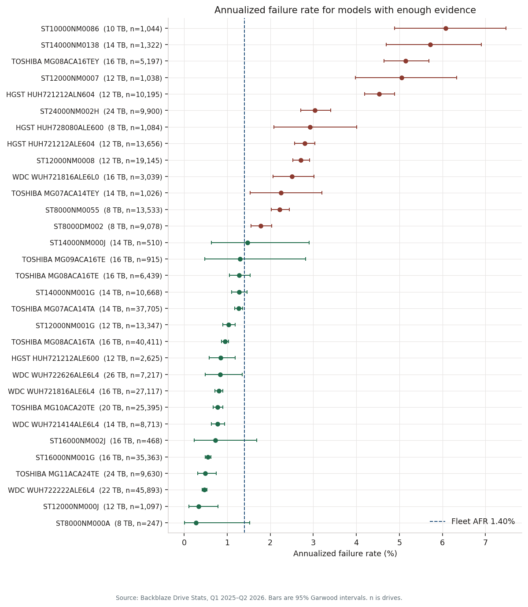
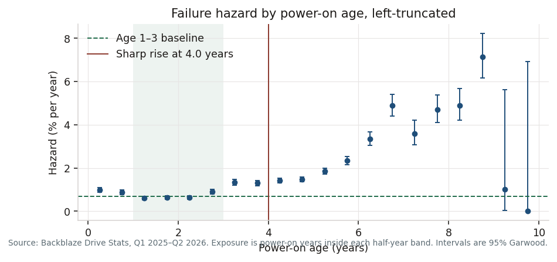
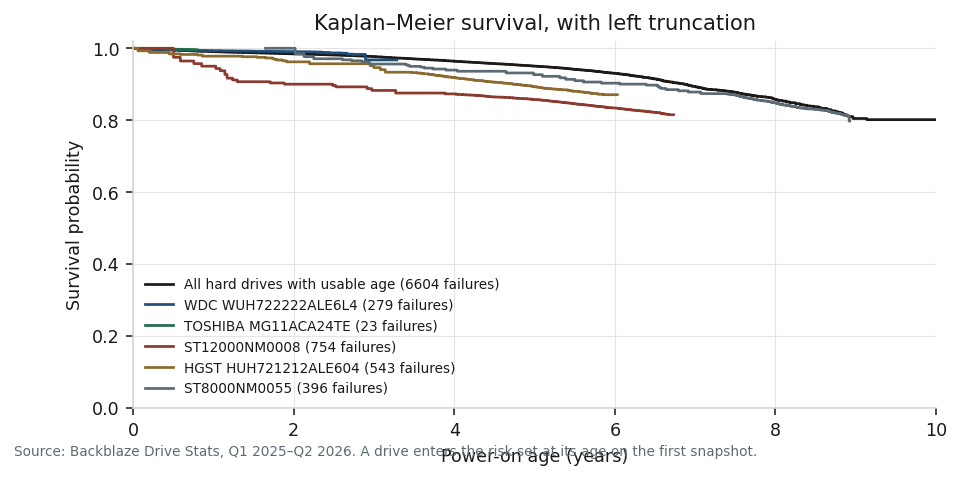
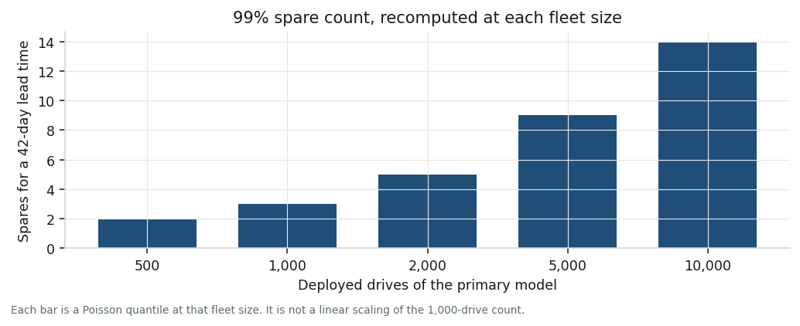

2027 capacity buy
Drive reliability and spares
Backblaze Drive Stats, 2025-01-01 to 2026-06-30. Hard drives only. The site plan is fictional.
Fleet annualized failure rate
1.40%
95% interval 1.37%–1.44%
Standardize on
WDC WUH722222ALE6L4
Stop buying: 13 models
Age where risk rises
4.0 yr
Failure risk first doubles the age 1–3 hazard at 4.0 power-on years.
Spares for the 100 PB plan
10
7 WDC WUH722222ALE6L4 + 3 TOSHIBA MG11ACA24TE. 99% service, 42-day lead, $100,000 budget.
Which models should we standardize on, and which should we stop buying?
Standardize on WDC WUH722222ALE6L4. Stop buying 13 models. A stop is a current model of at least 8 TB whose lower 95% bound sits above the fleet rate, with at least 200 drives and 100,000 drive-days.

| Model | Maker | TB | AFR | 95% interval | Drives | Decision |
|---|---|---|---|---|---|---|
| ST8000DM002 | Seagate | 8 | 1.78% | 1.56%–2.04% | 9,078 | Stop buying |
| ST8000NM0055 | Seagate | 8 | 2.22% | 2.02%–2.44% | 13,533 | Stop buying |
| TOSHIBA MG07ACA14TEY | Toshiba | 14 | 2.25% | 1.53%–3.20% | 1,026 | Stop buying |
| WDC WUH721816ALE6L0 | WDC | 16 | 2.51% | 2.07%–3.02% | 3,039 | Stop buying |
| ST12000NM0008 | Seagate | 12 | 2.71% | 2.52%–2.91% | 19,145 | Stop buying |
| HGST HUH721212ALE604 | HGST | 12 | 2.80% | 2.57%–3.04% | 13,656 | Stop buying |
| HGST HUH728080ALE600 | HGST | 8 | 2.93% | 2.08%–4.01% | 1,084 | Stop buying |
| ST24000NM002H | Seagate | 24 | 3.04% | 2.71%–3.41% | 9,900 | Stop buying |
| HGST HUH721212ALN604 | HGST | 12 | 4.54% | 4.20%–4.89% | 10,195 | Stop buying |
| ST12000NM0007 | Seagate | 12 | 5.06% | 3.98%–6.34% | 1,038 | Stop buying |
| TOSHIBA MG08ACA16TEY | Toshiba | 16 | 5.14% | 4.64%–5.68% | 5,197 | Stop buying |
| ST14000NM0138 | Seagate | 14 | 5.72% | 4.69%–6.91% | 1,322 | Stop buying |
| ST10000NM0086 | Seagate | 10 | 6.08% | 4.89%–7.47% | 1,044 | Stop buying |
| ST8000NM000A | Seagate | 8 | 0.27% | 0.01%–1.53% | 247 | Approved |
| ST12000NM000J | Seagate | 12 | 0.34% | 0.11%–0.79% | 1,097 | Approved |
| WDC WUH722222ALE6L4 | WDC | 22 | 0.47% | 0.42%–0.53% | 45,893 | Standardize |
| TOSHIBA MG11ACA24TE | Toshiba | 24 | 0.50% | 0.31%–0.74% | 9,630 | Second source |
| ST16000NM001G | Seagate | 16 | 0.55% | 0.49%–0.62% | 35,363 | Approved |
| ST16000NM002J | Seagate | 16 | 0.72% | 0.23%–1.69% | 468 | Approved |
| WDC WUH721414ALE6L4 | WDC | 14 | 0.78% | 0.63%–0.94% | 8,713 | Approved |
| TOSHIBA MG10ACA20TE | Toshiba | 20 | 0.78% | 0.67%–0.90% | 25,395 | Approved |
| WDC WUH721816ALE6L4 | WDC | 16 | 0.81% | 0.72%–0.90% | 27,117 | Approved |
| WDC WUH722626ALE6L4 | WDC | 26 | 0.84% | 0.49%–1.35% | 7,217 | Approved |
| HGST HUH721212ALE600 | HGST | 12 | 0.85% | 0.58%–1.19% | 2,625 | Approved |
| TOSHIBA MG08ACA16TA | Toshiba | 16 | 0.95% | 0.87%–1.03% | 40,411 | Approved |
| ST12000NM001G | Seagate | 12 | 1.03% | 0.90%–1.19% | 13,347 | Approved |
| TOSHIBA MG07ACA14TA | Toshiba | 14 | 1.26% | 1.17%–1.36% | 37,705 | Approved |
| ST14000NM001G | Seagate | 14 | 1.28% | 1.11%–1.47% | 10,668 | Approved |
| TOSHIBA MG08ACA16TE | Toshiba | 16 | 1.28% | 1.06%–1.53% | 6,439 | Approved |
| TOSHIBA MG09ACA16TE | Toshiba | 16 | 1.30% | 0.48%–2.82% | 915 | Approved |
| ST14000NM000J | Seagate | 14 | 1.48% | 0.64%–2.91% | 510 | Approved |
At what age does failure risk rise sharply?
Failure risk first doubles the age 1–3 hazard at 4.0 power-on years. From age 1 to 3 the hazard is 0.68% per year. It is already higher at age 3, and the highest well-estimated band is 7.14% per year at 8.5 years.


How many spares should we keep during replacement lead time?
7 WDC WUH722222ALE6L4 + 3 TOSHIBA MG11ACA24TE. Counts are Poisson quantiles, recomputed at each fleet size, using the primary model’s planning failure rate.

| Deployed drives | Expected failures in 42 days | Spares at 99% | Shortfall with zero spares |
|---|---|---|---|
| 500 | 0.4 | 2 | 8 TB |
| 1,000 | 0.7 | 3 | 16 TB |
| 2,000 | 1.4 | 5 | 31 TB |
| 5,000 | 3.6 | 9 | 78 TB |
| 10,000 | 7.1 | 14 | 157 TB |